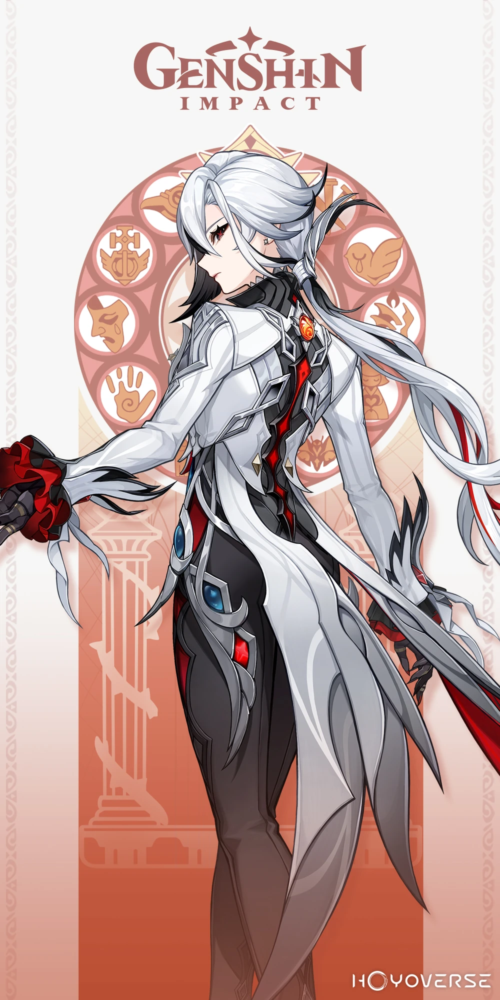

Arlecchino is a 5 ⭐ pyro character. She is the 4th harbinger known also by the code name 'The Knave'

Livelo:
HP
ATK
DEF
Crit Dmg
1,020.05
26.63
59.53
-
The Knave, Fourth of the Fatui Harbingers.
The ancient balemoon blood flows within her fate, granting her all that the dynasty once had — yearning, power, and curses alike.
In her short life, she has supped of countless agonies and drunk deep of the cup of suffering, just as her ancestors once did when they imbibed poison at the rising of the dark sun.
Still, neither suffering nor fate has proved a fatal toxin to her.
Instead, they are the firewood fueling her quietly burning hearth, and are the fire bringing her children warmth.
Someday, the hearth-fire's faint radiance shall burn the old world away, incinerating the final scion of the baleful moon as well.
Someday, these still immature children will break free of ancient fate and usher in the future without tears she dreams of.
But until that time comes, until dawn breaks, the one named Peruere shall stand guard over their fragile, sweet dreams.
"If fate should pave for us a pale road, let us dye it the bloody crimson of the bale moon."
"Even a flickering, famished fire can burn all suffering away before daybreak."
Talents
"Invitation to a Beheading"
Normal Attack Performs up to 6 consecutive spear strikes.
Charged Attack Consumes a fixed amount of Stamina, dashing toward a nearby opponent and cleaving once. Continuously holding this button will cause Arlecchino to consume Stamina and engage in up to 5s of high-speed movement.
Plunging Attack Plunges from mid-air to strike the ground below, damaging opponents along the path and dealing AoE DMG upon impact.
Masque of the Red Death When Arlecchino has a Bond of Life equal to or greater than 30% of her Max HP, she will enter the "Masque of the Red Death" state, where her Normal, Charged, and Plunging Attacks will be converted to dealPyro DMG. This cannot be overridden. When in the "Masque of the Red Death" state, Arlecchino's Normal Attacks will deal extra DMG to opponents on hit that scales off her ATK multiplied by a certain ratio of her current Bond of Life percentage. This will consume 7.5% of said current Bond of Life. Her Bond of Life can be consumed this way every 0.03s. When her Bond of Life is consumed in this manner, All Is Ash's CD will decrease by 0.8s.
Unlike most Polearm users, Arlecchino does not need to perform a Normal Attack before every Charged Attack.
The third hit of Arlecchino's Normal Attack will pull enemies towards her.
If Arlecchino wields any other polearm other than Crimson Moon's Semblance, her polearm will have a yellow scythe blade starting from the second hit of her Normal Attack combo.
While holding her charged attack and during her high speed movement, she will sprout a red wing and be able to fly over the surface of water
Her Normal Attack AoE is increased during her "Masque of the Red Death" state.
She can retain her pyro infusion even if she is swapped off field and swapped back in so long as her Bond of Life is greater than 30% HP.
"All is Ash"
Summons forth Balemoon Bloodfire, dealingPyro DMG to multiple nearby opponents and performing a dash-cleave against one of them, dealing AoE Pyro DMG.
Opponents hit by the aforementioned attack will have a Blood-Debt Directive applied to them.
Blood-Debt Directive
Lasts 30s. Every 5s, it will deal 1 instance of Pyro DMG to the opponent. Max 2 instances. This DMG will be considered Elemental Skill DMG.
When Arlecchino uses a "Invitation to a Beheading". Charged Attack or her Elemental Burst, Balemoon Rising">Balemoon Rising, she will absorb and clear nearby Blood-Debt Directives. Each Directive absorbed grants her a "Bond of Life" worth 65% of her Max HP.
The maximum value of the Bond of Life she can be granted through Blood-Debt Directives within 35s after using her Elemental Skill is 145% of her Max HP. Using the Elemental Skill again during this duration will restart the count on duration and the limit on the value of Bond of Life she may gain from Blood-Debt Directives.